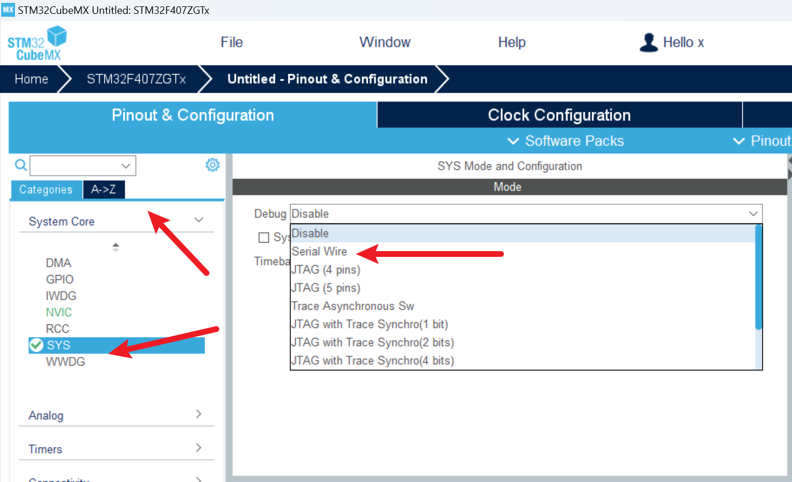
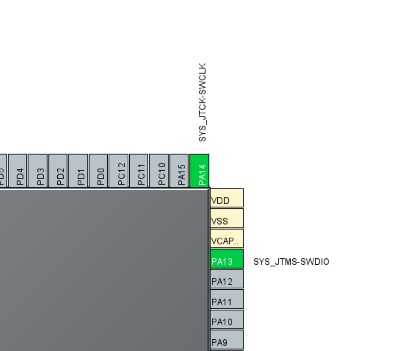
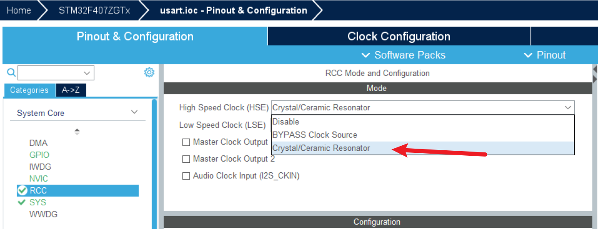
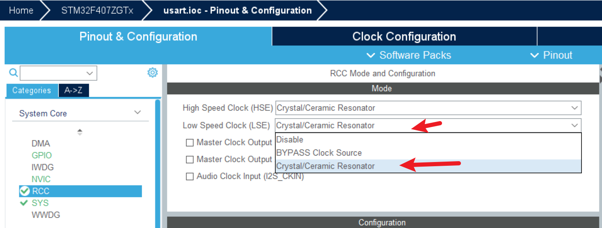
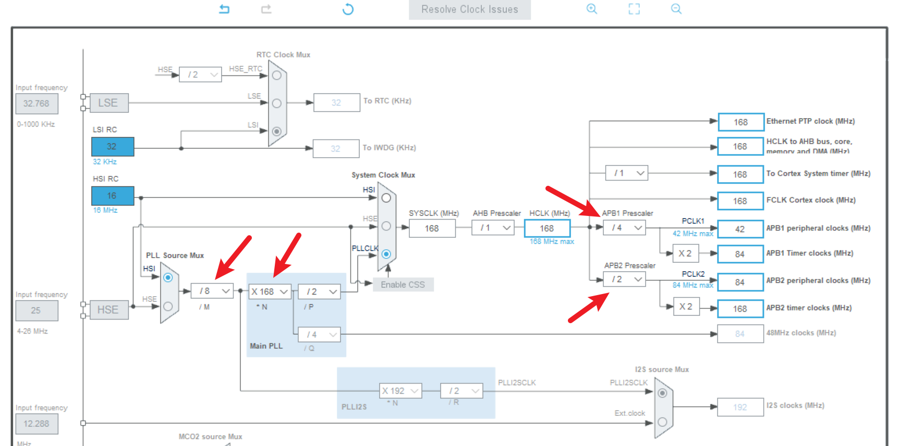

<!DOCTYPE lake>
<h2 data-lake-id="Lxq5p" id="Lxq5p"><span data-lake-id="u097b278a" id="u097b278a">调试功能</span></h2><p data-lake-id="ucc30e012" id="ucc30e012"></p><p data-lake-id="ufa9d5d48" id="ufa9d5d48"><span data-lake-id="u0348fffc" id="u0348fffc">通常，开发阶段会打开调试功能，选择</span><code data-lake-id="ua784bedb" id="ua784bedb"><span data-lake-id="uf22a1982" id="uf22a1982">Serial Wire</span></code><span data-lake-id="uaab0958d" id="uaab0958d">即可。</span></p><p data-lake-id="ue2d28dcd" id="ue2d28dcd"><span data-lake-id="u161fd8bb" id="u161fd8bb">选择完成后，右侧芯片会显示调试的两个引脚。</span></p><p data-lake-id="ube2c7499" id="ube2c7499"></p><h2 data-lake-id="rbSy0" id="rbSy0"><span data-lake-id="uabfc1ab1" id="uabfc1ab1">晶振配置</span></h2><p data-lake-id="ud80f8f70" id="ud80f8f70"></p><p data-lake-id="ua5aaecba" id="ua5aaecba"><span data-lake-id="u0ce39ecf" id="u0ce39ecf">配置高速外部晶振。这个对应外部8M的晶振</span></p><p data-lake-id="u180532af" id="u180532af"></p><p data-lake-id="udf0b5594" id="udf0b5594"><span data-lake-id="u28a7b250" id="u28a7b250">配置时钟晶振，这个对应外部rtc晶振。</span></p><h2 data-lake-id="uRzRE" id="uRzRE"><span data-lake-id="u6d18788c" id="u6d18788c">时钟树</span></h2><p data-lake-id="uf5389edc" id="uf5389edc"></p><p data-lake-id="u14cc6009" id="u14cc6009"><span data-lake-id="ue88ec7a3" id="ue88ec7a3">通常，在芯片配置的时候，会把时钟树进行调整。</span></p><p data-lake-id="ue7880929" id="ue7880929"><span data-lake-id="u5230e3b0" id="u5230e3b0">STM32不同芯片最高主频不同，通常会调整到最高主频，发挥最大效能。</span></p><p data-lake-id="u06b9bec8" id="u06b9bec8"><span data-lake-id="ub6ec49fc" id="ub6ec49fc">以STM32F407ZG为例，主频最高168MHZ。</span></p><p data-lake-id="u60f1be74" id="u60f1be74"><span data-lake-id="u192076d9" id="u192076d9">在配置的时候 将</span><code data-lake-id="u0a42de5c" id="u0a42de5c"><span data-lake-id="u67a8df4f" id="u67a8df4f">SYSCLK</span></code><span data-lake-id="u1e7444ea" id="u1e7444ea">调整为最大频率。配置时是无法直接进行调整的，需要通过倍频方案进行调整。</span></p><ul list="uad6aa700"><li data-lake-id="uf02e1f2a" fid="u2111d4a1" id="uf02e1f2a"><span data-lake-id="uf301eea9" id="uf301eea9">选择PLLCLK倍频方式</span></li><li data-lake-id="u5f597b60" fid="u2111d4a1" id="u5f597b60"><span data-lake-id="ua82316ee" id="ua82316ee">调整PLLCLK倍频方案。</span></li></ul><p data-lake-id="ud2532f57" id="ud2532f57"><span data-lake-id="u28215920" id="u28215920">对于一些外设超出自身频率时，通过分频来解决。</span></p>